01
EVENT NODE / 01
PROJECT TEAMS, INTERNSHIPS, & HOBBY PROJECTS
PROJECT CATALOG
Quantum Firmware Internship @ IBM
Mixed-System Qubit Control Emulation
Developing a YAML-configurable multi-emulator harness to validate mixed-gen / mixed-ISA qubit control electronics ahead of hardware rollout.
Waveform Memory Optimization Automated Testing
Used python multi-threading to automatically emulate, compare, and report qubit control execution binaries with various memory optimization strategies to accelerate next-gen quantum firmware development.
Cryogenic-CMOS ASIC ADC Characterization
Characterizing cryo-CMOS ASICs' ability to measure payload resistance across varying temperatures and payloads, enabling development of intrusion-free connectivity testing of dense qubit control research systems.
Room-Temp Electronics Manager Dashboard
Used IBM internal AI tooling to develop a GUI displaying critical information on qubit control electronics' health, connectivity, and booted images across the entire hardware stack. Included features for GUI-based booting and synchronous use.
AI/Qiskit/QEC Integration
Integrated Qiskit and QEC analysis to an IBM internal AI tool, enabling the capability to analyze Qiskit quantum circuits and provide a matrix of recommendations covering QEC strategies and IBM hardware backends based on the quantum circuit analysis.
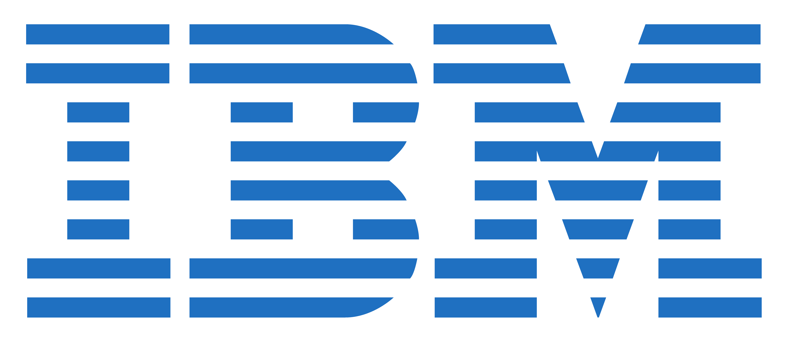
Bay Board PCBs
08/24 to 05/25
Developed a network of 3 control and data acquisition PCBs as a critical component of the flight avionics architecture on MASA's rocket.
Each board interfaces with external pressure transducers and thermocouples, as well as onboard IMUs and barometers, to acquire data and send
telemetry to the flight computer. Each board also controls valves to enable precise pressure control and sequencing.
I designed over 85% of the schematics and layout.
Alias: Trident
Number Components: 501
Layers: 6
Comm. Protocols: Ethernet, I2C, SPI, UART
Digital Subsystems: STM32, IMUs, Barometers
Analog Subsystems: Power Regulation, Valve Control, Motor Control, Thermocouple & Pressure Transducer Interfaces
Team Members: 4
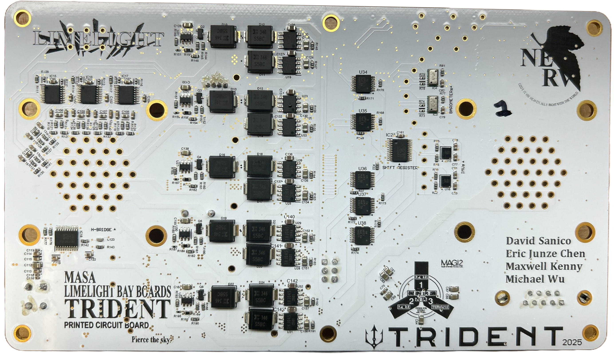

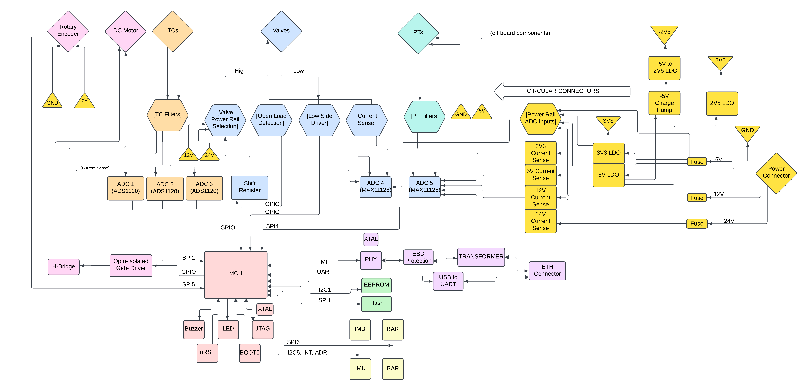
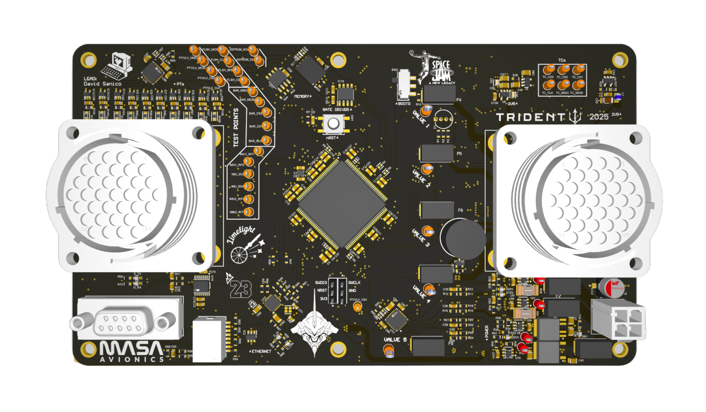

Electrical Engineering Internship @ Rocket Lab
GPS PCB Design Verification
Led design verification for a satellite GPS PCB, shaving 4 weeks off testing by soldering a PCB, analyzing power regulation and latch behavior via LTspice, and verifying physical assembly using DMMs, oscilloscope, power supplies, and electronic loads.
Test Rig Interface PCB
Designed, ordered, assembled, and validated an interface board bridging a flight PCB to an automated test rig, enabling integrated and automated testing. Underwent full product lifecycle including design reviews to meet customer needs, parts sourcing with efficient costs, and in-house assembly and validation.
Discrete LDO Test PCB
Developed and utilized a test PCB to analyze a discrete LDO designed for long-term radiation and thermal cycling, uncovering stability issues and preventing costly redesign through Bode instrument analysis, thermal analysis, and LTspice simulations.
Pulse-Driver PCB
Designed a low-side NMOS pulse driver PCB that streamlined board power supply testing and step response analysis.
ADC Firmware
Wrote firmware in Arduino to validate an onboard ADC, implementing SPI communication and data readout from flight channels to aid in board-level bring-up and testing.
Flight Recorder PCB
03/24 to 01/25
Designed and fabricated my first PCB from start to finish.
Includes onboard sensors, onboard memory, Ethernet, SPI, I2C, EEPROM, and an STM32 to record and protect
flight data sent from onboard sensors and a flight computer. Also includes a failure mode to preserve data
during power loss. Banana-shaped to wrap around the engine.
Alias: Keylime
Number Components: 181
Layers: 6
Comm. Protocols: Ethernet, I2C, SPI, UART
Digital Subsystems: STM32, IMUs, Barometers
Team Members: 1

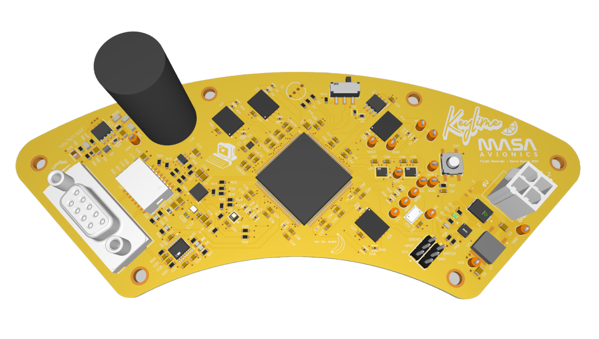
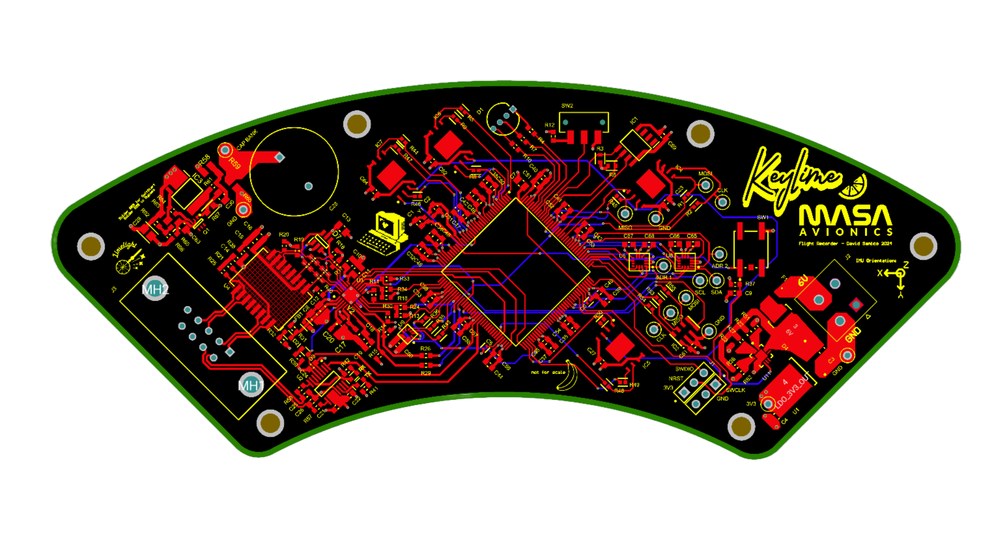
Intro to Computer Organization & Intro to Data Structures and Algorithms
Assembler, Linker, and Machine Code Execution Simulator
Completed a series of projects that assembles individual assembly-language files (RISC-based architecture) into object files, links the object files to produce a single executable, and simulates the execution of the machine code.
Pipelined Datapath Simulator
Produced a program that simulates every cycle of a 5-stage pipelined processor with detect-and-stall, data forwarding, and predict branch-not-taken strategies. Simulator written in C, test cases written in RISC-based assembly language.
Cache Simulator
Added cache-access functionality to machine code execution simulator, acting as a write-back, allocate-on-write cache of tunable associativity. Simulator functions written in C, test cases written in RISC-based assembly language.
Euchre Cardgame Simulator
Built a C++ simulation of the card game Euchre featuring human and bot players, using object-oriented programming with inheritance and polymorphism to model cards, players, and gameplay logic.
Machine Learning Post Classifier
Implemented a C++ machine learning classifier that automatically labels Piazza posts by topic using a bag-of-words model and probabilistic learning techniques, gaining experience with containers like sets and maps for natural language processing.
Content-Aware Image Resizer
Created a content-aware image resizing tool using seam-carving to remove low-energy pixel seams, with extensive testing and debugging of pointers, streams, and abstract data types.
Search-and-Rescue Robot
08/25 to 12/25
Created a self-navigating robot with steering, odometry, battery monitoring, sonar sensors, a thermopile, and a camera. Produced software to support PID-controlled path following, obstacle avoidance, heat detection, and computer vision with color-based object detection to simulate search-and-rescue of humans. Hardware includes BeagleBone Blue and an Arduino.
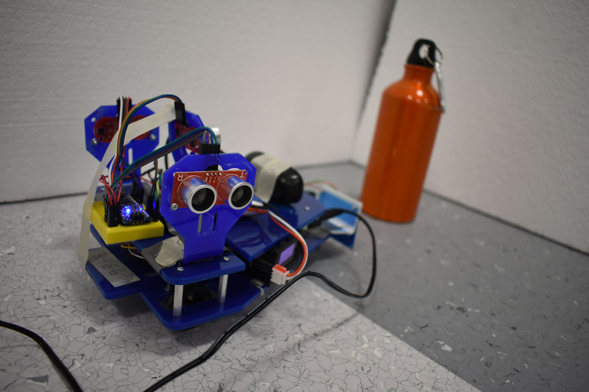
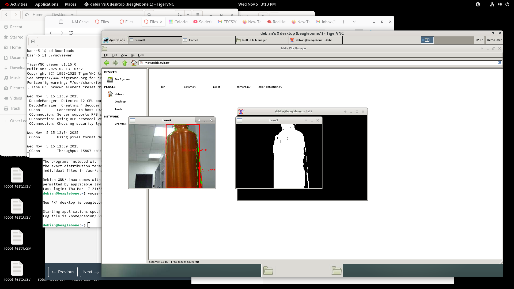
Machine Learning Based Stock Analysis
01/24 to 05/24
Created an LSTM model designed to predict NVIDIA's stock price trend for the next day, with performance in RMSE and MAPE precision benchmarks over 10x greater than the MDST team's base model.
Libraries: Numpy Pandas TensorFlow Keras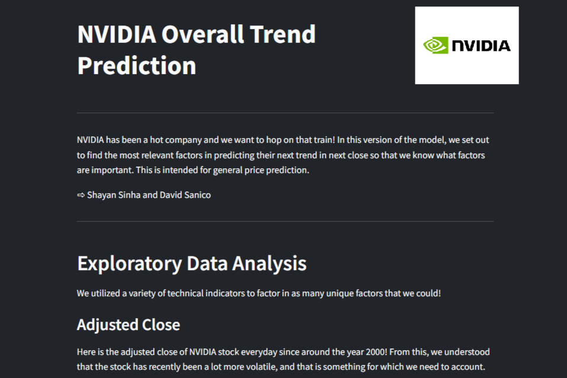
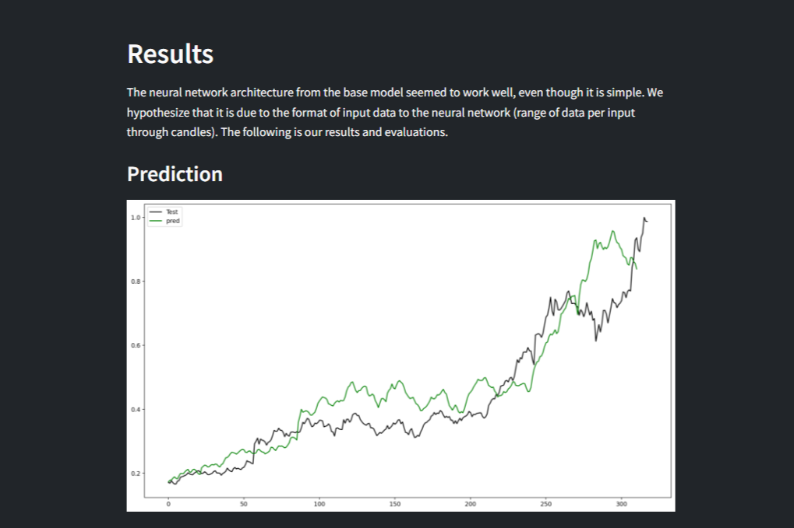
Electric Nerf Blaster Modification
11/19 to 01/22
Converted a semi-automatic pistol into a fully-automatic rifle with increased power, dual-ammo compatibility, tracer-ammo UV charging, and an integrated voltmeter. This was a fun high school project that introduced me to the world of electrical engineering.
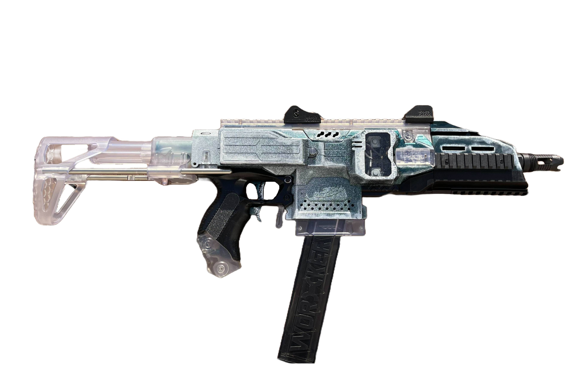

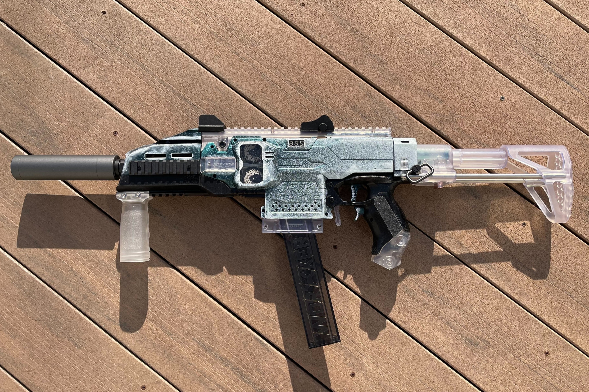
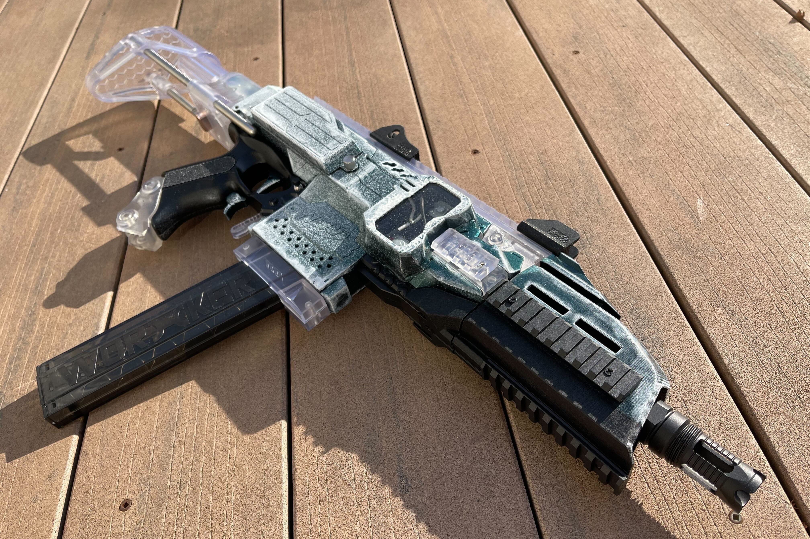
Miscellaneous Projects
Automated Plant Keeper with Computer Vision A.I.
07/24 to 08/24
Created a system to automatically provide water and light to a plant with machine-learning image recognition to adjust moisture and light-hour thresholds. Used an ESP32 with firmware in Arduino to measure soil moisture and light, control a water pump, and take pictures with a camera and send to a Flask server hosted by my laptop. Created a Flask server to send the image to a Colab script that uses a YOLO model to detect leaves, then a convolutional neural network for each leaf to determine if the plant required more frequent watering and light.

Optics Research for Quantum Key Distribution
03/25 to 04/25
Explored the principles of Quantum Key Distribution and the physics of light and photonic qubits traversing the atmosphere from satellites to ground stations. Researched various approaches for encoding quantum information into photons, multiplexing for optical communication, and adaptive optics for satellite-to-ground transmission. Proposed combined time- and polarization-division multiplexing with time-bin quantum encoding to minimize atmospheric effects.
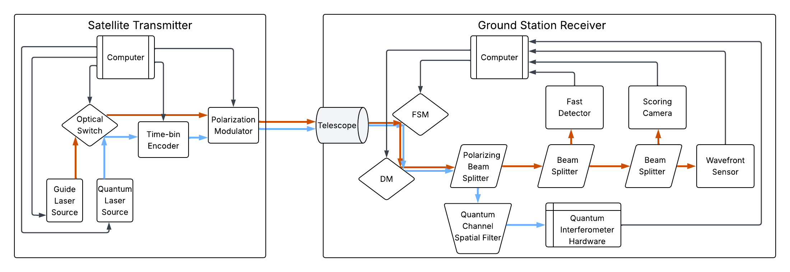
Quantum Circuit Simulator (QuaCS)
03/25 to current
Creating a simulator for basic 6-qubit quantum circuits with an interactive circuit-building tool, results for probability and randomized measurements, and support for entangled quantum states. Using Typescript for the back-end and React.js for the front-end. I'm working on this with a friend, and support for front-end features and entanglement is in progress!
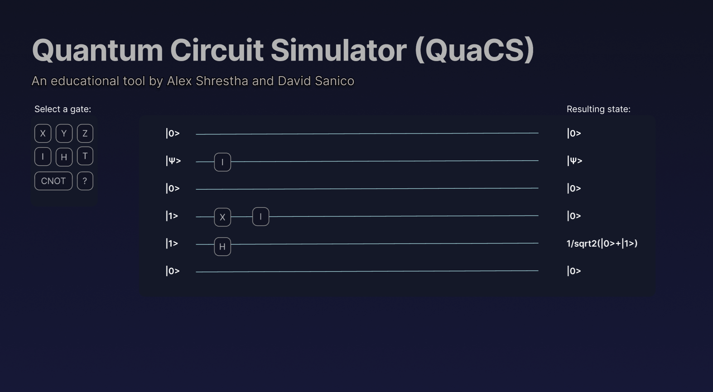